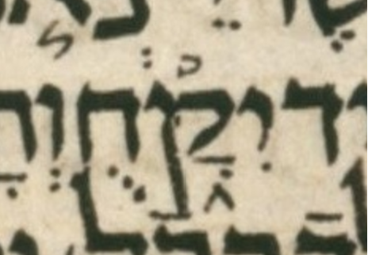

| n | 7 |
| citation:book | 2Kings |
| citation:c | 20 |
| citation:v | 18 |
| citation:position | 7 |
| author:name | Ben Denckla |
| author:mail | bdenckla@alum.mit.edu |
| author:confirmed | true |
| description | Note that while creating the pointed qere, the transcriber changed a qubuts to a shuruq |
| lc:folio | Folio_217A |
| lc:column | 1 |
| lc:line | 10 |
| lc:credit | Credit: Sefaria.org. |
| reftext | יִקָּ֑חוּ |
| refuni | yod hiriq qof dagesh qamats etnahta het vav dagesh |
| changetext | יִקָּ֑חוּ |
| changeuni | yod hiriq qof dagesh qamats etnahta het vav dagesh |
| notes:note | The manuscript’s pointed ketiv (MPK) is יִקָּ֑חֻ. |
| notes:note-2 | The qubuts in the MPK becomes a shuruq dot in the qere. |
| notes:note-3 | The dagesh in the qof is way off center, but still legit IMO. |
| transnotes:transnote:action | Add |
| transnotes:transnote:type | a |
| transnotes:transnote:beforetext | XXX fill me in beforetext |
| status | Pending |
| type | NoTextChange |